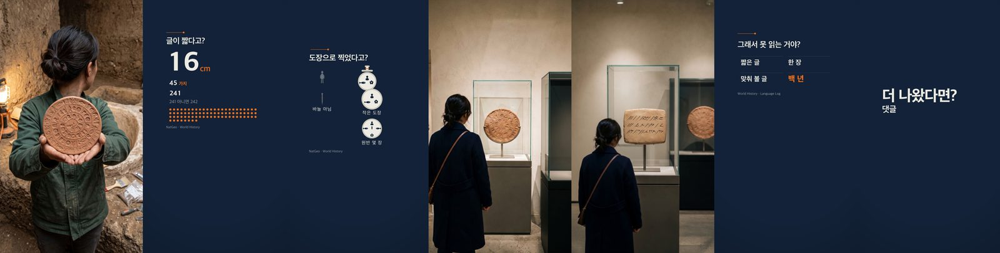
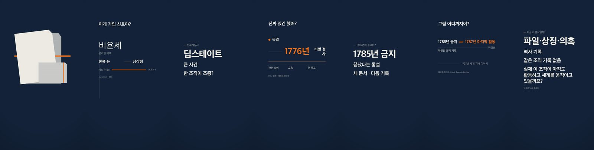
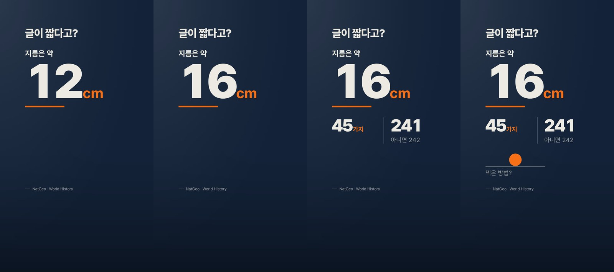
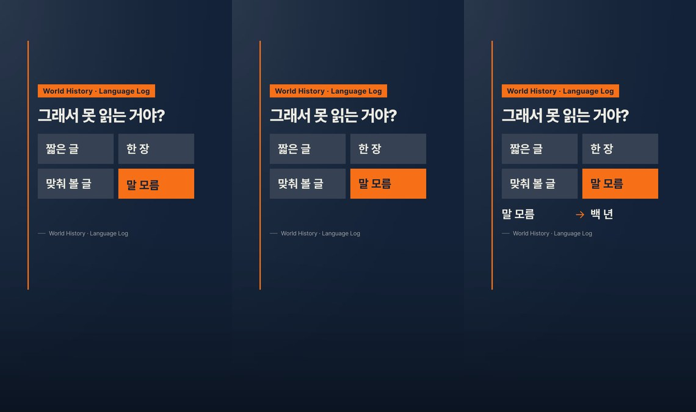
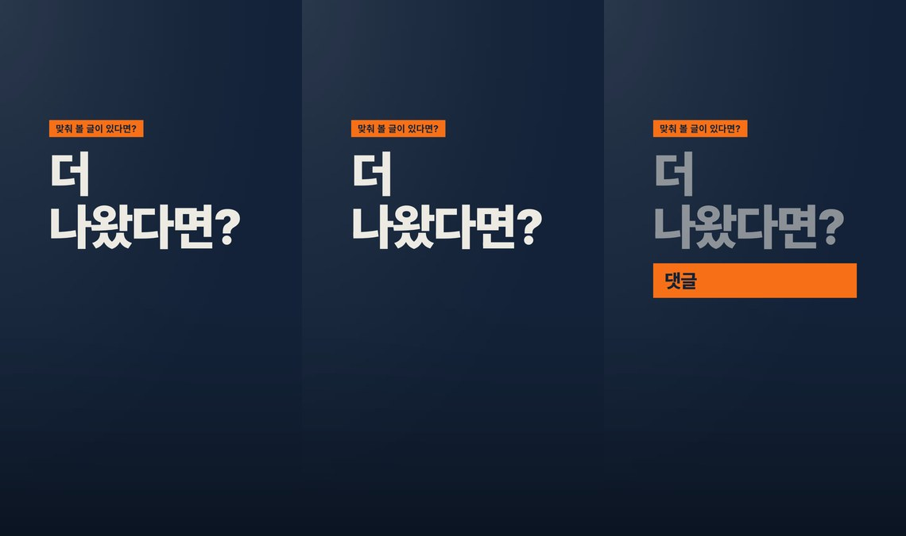
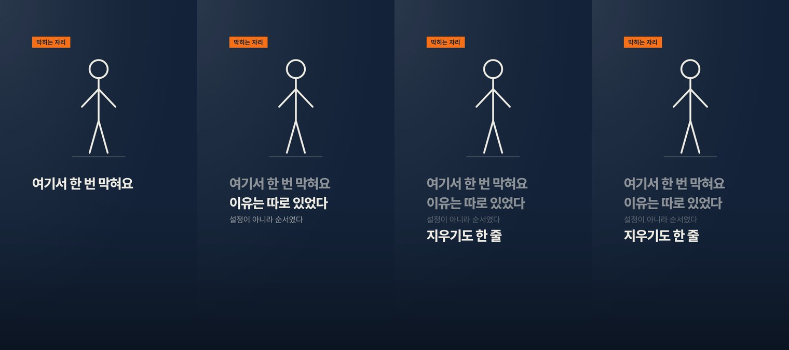
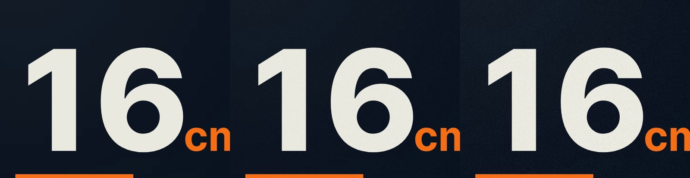

모션 슬라이드가 "구리다"고 읽히는 원인은 곡선이나 타이밍이 아니라 구조 네 가지였다. 단색 바탕, UI 규모의 글자, 폰이 못 읽는 1.5px 헤어라인, 그리고 모든 요소가 같은 순간 같은 곡선으로 뜨는 안무. 방송 뉴스·프리미엄 설명 채널의 그래픽은 넷 다 반대로 한다. 이 조사로 템플릿 세 벌·검사기·리뷰어 루브릭을 같이 고쳤다.
1. 전과 후

개편 전 — pundago ep11 일곱 컷의 끝 프레임. 사진 컷을 빼면 단색 바탕 위에 작은 글자와 헤어라인뿐이라 위쪽 절반에 문서 한 장이 떠 있다.

개편 전 — ep10. 같은 결함이 더 뚜렷하다. 제목은 60px, 본문 35px, 선은 1.5px.

개편 후 — 같은 ep11 s2 를 새 템플릿으로 다시 저작. 왼쪽부터 그룹 1 중간(카운트업 중)·그룹 1 끝·그룹 3 끝·그룹 4 끝. 플레이트 바탕(좌상 키 라이트·아래 비네트), 여는 사슬(제목→키커→값), 340px 히어로와 밑줄 띠, 44px 본문, 6px 선, 마지막 그룹은 도장이 베드에 내려앉는 프레스.

s6 — 태그 플레이트, 패널 셀 격자, 액센트 셀이 그룹 1 에 열리고 그룹 2 에 상태 전환.

s7 — 낱말 스태거 마스크 라이즈, 앞 마디 dim, 액센트 밴드 평결.

캐릭터 연기(합성 픽스처) — 같은 바탕·태그·마스크 라이즈·포커스 시프트. 세 템플릿이 한 시스템으로 읽힌다.
2. 조사 — 방송 그래픽이 하는 것
세 갈래로 나눠 조사했다. 해외 방송·설명 채널의 디자인(BBC·Bloomberg·Vox·디자인 시스템 모션 규격), 한국 방송 CG·유튜브 정보 채널(방송심의규정·MBC 가이드라인·SBS/MBC/JTBC 그래픽·Netflix 한국어 자막 규격), 그리고 순수 CSS 로 옮길 수 있는 모션 기법. 표기는 sourced 원문 확인, consensus 실무자 합의, inference 추론.
바탕은 층이다
BBC News 2019 개편은 영상 위에 "simplified gradient overlay", 로워서드는 검정 오버레이 + 브랜드 색 한 점. Bloomberg Quicktake 는 빛을 팔레트로 쓴다 — 단색 바탕은 실무에 거의 없다. newscaststudio · designboomsourced
마감 장치 목록: 그라디언트·비네트·텍스처·라이트 스윕. "비네트는 어디에나". Derek Lieusourced 그레인은 8-bit 밴딩을 가리는 검증된 수단이고 2~4% 는 은근, 5~8% 는 보인다. 노이즈 가이드sourced
글자는 방송 위계로
모바일 9:16 오버레이 최소 36px, 1차 48~72px 볼드, 2차 32~40px, 자막 본문 최소 약 44px. rocketship · itnasourced 제목:본문 ≥ 2.5:1. pangramsourced
Netflix 한국어: 줄당 16자, 최대 2줄, 성인 12자/초. Netflix KRsourced 728px 존에 16자면 글자당 44px — 본문 44px 이 두 근거에서 같이 나온다.
JTBC 보도용 서체는 ExtraBold 를 따로 만들고 숫자를 대문자보다 크게 그렸다. 윤디자인sourced 한글 자간은 -0.02em 기본·-0.03em 상한, 양수 자간은 피한다. adamwright · uxdevsourced
플레이트와 띠
SBS 8뉴스 헤드라인은 남색 바탕 + 흰 글씨 + 하늘색 하단선, 일반 자막은 흰 바탕 + 남색 글씨 — 색 두 벌. JTBC 는 2024년 속보 자막을 그라데이션에서 단색으로. SBS · JTBCsourced
생성형 프런트엔드의 표식은 rounded-2xl·shadow-lg·1px 회색 테두리·중앙 정렬·보라→파랑 그라디언트. dev.tosourced 방송 플레이트는 각진 단색 띠가 그리드에 물려 있고 글자와 시차를 둔다 — 카드와 플레이트의 경계는 정확히 그 네 속성이다.inference
플레이트 먼저, 글자 다음: 바 0→15f, 이름 10f 부터, 설명은 몇 프레임 더 뒤. pond5 · Vox 로워서드도 "텍스트가 배경보다 몇 프레임 늦게". premiumbeatsourced
선 굵기
1080px 폭이 65mm 폰에 실리면 1.5px ≈ 0.09mm — 팔 길이에서 시력 한계(1 arcmin ≈ 0.1mm) 아래고 코덱이 더 뭉갠다. 6px ≈ 0.36mm 면 여유.inference "영상은 최소 2px" 문구는 검색 요약에만 있다.consensus
안무
입장은 감속, 퇴장은 가속 곡선을 따로 — Material 3 emphasized-decelerate (.05,.7,.1,1), Carbon expressive entrance (0,0,.3,1). M3 · Carbonsourced 지금까지 쓰던 easeOutExpo 는 방송에서도 쓰는 곡선이라 원인이 아니었다.
텍스트 등장 0.3~0.8s, 스태거 0.05~0.15s, 오버슈트는 5~10%·미세 팝 2~3%, 리니어는 "로봇". trydemotionsourced 거리에 비례해 시간을 늘린다 — 28px 이동은 1920px 프레임에서 툴팁 규모다. Carbonsourced
줄 마스크 라이즈(overflow:hidden + translateY(110%)→0)가 프리미엄 타이틀의 기본 관용구. camoaconsensus JTBC 는 2025년 헤드라인 등장을 좌→우에서 하→상으로 바꿨다.sourced
Heer & Robertson: 축 변경과 값 변경을 분리, 스테이지 ~1초, 요소별 스태거. InfoVis 2007sourced ISOTYPE: 많은 양은 같은 크기 그림의 반복. Pinneysourced
색과 데이터
강조 소수만 색, 나머지는 불투명도를 낮춘다. 브랜드 색은 가장 중요한 범주 하나. Datawrapper · FT Burn-Murdoch "산만함 최소·대비 최대". GIJNsourced 정보형 화면은 흰색 단독형 + 포인트 1색이고 2~5색 혼합은 예능 어휘. 김현기·방윤경 2013sourced
MBC 제작 가이드라인: 도표는 실제 수치에 비례, 자막의 과도한 크기는 왜곡. MBC 방송심의규정 16조: 오차범위 안 값을 서열화해 그리지 않는다.sourced
3. 토큰 — 무엇이 얼마로 바뀌었나
항목
전
후
근거
바탕
단색 잉크 + 옅은 비네트 하나
키 라이트(종이색 10%) + 비네트(42%) 알파 PNG 플레이트, 그레인 6/255 는 인코딩 때
21.6 → 3.2 fpsCSS radial-gradient 두 겹 + feTurbulence 그레인을 페이지에 그렸을 때의 캡처 속도 (ep11 s2 기준선 대비)
15.1 fps키 라이트·비네트를 60×107 알파 PNG 한 장으로 구워 늘렸을 때 — 바탕 없음(15.5)과 같다
8.4 fps96px 노이즈 타일을 페이지에 겹쳤을 때 — 노이즈가 든 프레임은 PNG 인코딩이 두 배 느리다
0.09 → 0.76 MB/s그레인을 ffmpeg noise(정적, seed 고정, 강도 6)로 인코딩 때 얹은 클립 크기. 시간 축 그레인(t 플래그)은 12.6 MB/s 라 뺐다

왼쪽부터 그레인 없음 · 정적 6 · 시간축 6. 정적 6 이 방송 질감이 남는 최소치이고 크기는 16분의 1이다.
결정: 플레이트는 잉크 색과 무관한 알파 오버레이 PNG 로 템플릿에 인라인(2.2KB), 그레인은 render-motion-slide.mjs --grain(기본 6, 정적, seed 7). 리뷰어가 읽는 시트 PNG 에는 플레이트만 있고 그레인은 없다 — 문서에 적어 두었다.
5. 같이 바뀐 것
motion-slide-template.html · kinetic-type-template.html · character-act-template.html — 토큰·플레이트·부품·기본 렌더 함수. 런타임 블록은 세 벌 동일(카운터에 --lead-in 시차, 포커스 0.55, data URL 은 파일 검사에서 제외).
check-slide.js — 그라데이션 금지를 저작 영역으로 좁힘(플레이트·스크림은 템플릿 머리에 산다), 인라인 SVG data URI 안의 url() 제외, primitive: 옵션도 프리미티브 표식으로 인정. 셀프테스트 83.
render-motion-slide.mjs --grain 신설(기본 6). 새 탭의 첫 캡처가 래스터 완료 전에 찍히는 경합(리뷰어가 클립 3 첫 프레임에서 실측)은 연속 두 캡처가 같을 때까지 다시 찍는 shotStable 로 막았다. 같은 파일에서 지속 층 배선 결함도 하나 나왔다 — __setSegs 를 첫 탭에만 걸어서 --jobs 로 열린 둘째 탭 이후가 잡은 그룹은 세그먼트 길이를 못 받고 토큰 길이로 돌았다(카운트가 문장의 52% 에서 멈췄고 요약의 커버리지 경고는 첫 탭 값만 봐서 조용했다). 이제 워커마다 같이 건다.
리뷰어 루프 세 라운드(설치본 루브릭 80점 → 새 루브릭 94 → 94 → 최종)에서 잡힌 템플릿 결함 — 플레이트 PNG 상하 반전, h.vdiv·.shape-bed 의 인라인 <i> 폭 0, 히어로 단위가 44px 바닥 아래, 출처 대시가 액센트, h.press 가 베드째 떨어져 페이드인으로 보임 — 전부 템플릿에서 고쳤다.
slide-design.md §1 바탕 층 신설, §3 활자·선, §4 플레이트와 스파인, §5 여는 사슬, §6 루브릭에 P0-10(44px·3px 바닥)과 "플레이트 없는 평면 바탕" 표식. slide-reviewer.md·slide-authoring.md·scenes-schema·optional-lanes 가 새 절 번호와 규칙을 따른다.
6. 남은 불확실
히어로 숫자가 프레임 높이의 몇 %여야 하는지는 어느 출처도 안 준다. 340px(캡하이트 약 12%) 은 존 폭 728px 에 세 자리가 들어가는 상한이다.
그레인 강도 6·플레이트 10%/42% 는 추론값이다. 채널 셋에서 한 회차씩 돌려 보고 조정한다.
정보형 쇼츠에서 좌측 정렬과 중앙 정렬 중 어느 쪽이 우세한지 조사한 자료는 없다. 방송 관용(좌상단 헤드라인)을 따랐다.
디자인 개편 자체는 템플릿에서 새로 저작하는 슬라이드에만 닿는다. 이미 저작된 회차의 슬라이드 파일은 옛 템플릿 사본이라 그대로 렌더된다. 다만 렌더러 쪽 변경 셋은 옛 슬라이드를 다시 렌더할 때도 걸린다 — 그레인 기본 6, 워커 탭까지 걸리는 __setSegs(.sv 를 쓴 옛 슬라이드는 이제 실제로 문장 끝까지 늘어나 클립 그림이 달라진다), 첫 프레임 재캡처.
조사 원문은 세 에이전트 보고(해외 방송 디자인 · 한국 방송/유튜브 · 모션 기법)를 합친 것이고 출처는 본문 링크가 전부다. 픽스처는 pundago ep11 scenes.js 사본 위에 s2·s6·s7 을 새 템플릿으로 다시 저작하고 캐릭터 샷 하나를 합성해 --sheet --segs auto 로 렌더했다.